Новости
23 сентября - День Государственного языка Кыргызской Республики!
Поздравляем Вас с Днем государственного языка!
Сегодня мы отмечаем День государственного языка, который является одним из главных символов государственности.
Язык каждого народа самобытен. Недаром в народе говорят, что «язык — лицо народа и его богатство». Знание родного языка является признаком уважения к своей нации и своим истокам.


Комната отдыха названа в честь Кумушбекова Чsнгыза, скончавшегося по болезни во время плодотворной работы в школе.


5 ОКТЯБРЯ – ДЕНЬ УЧИТЕЛЯ!
5 октября 2022 года провели День учителя и приурочили этот День ко Дню пожилых людей. Ученики поздравили своих учителей песнями, стихами и дарили своим учителям подарки.
Также присутствовали специально приглашенные гости чемпионка по л.атлетики Кулчунова М.Д., заслуженный работник культуры, певица Шамшиева Ширин, танцевальное шоу « Ажара».


Молодежь - наше будущее!
Молодежь - наше будущее! Учащиеся гимназии №66 в сопровождении учителей физкультуры показали спортивный, учебный комплекс и общежития школы.
Кожомат уулу Тилек, заместитель директора по воспитательной работе, приветствовала учеников и представила их чемпионам мира и Азии среди молодежи, которые в настоящее время учатся в школе.
По его словам: Наши двери всегда открыты для молодых людей, которые интересуются спортом, как вы.
 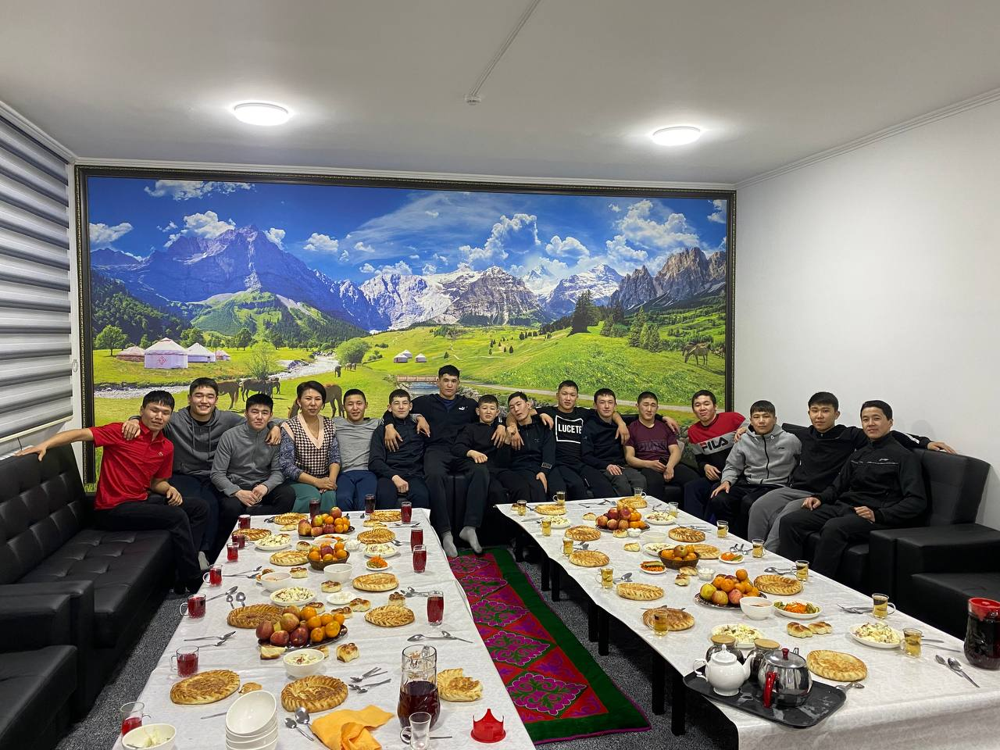
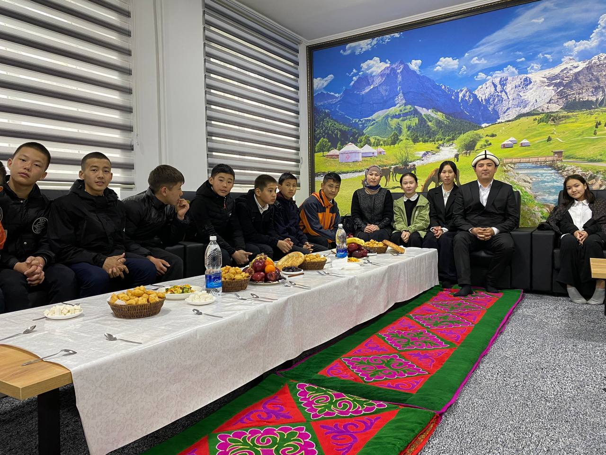
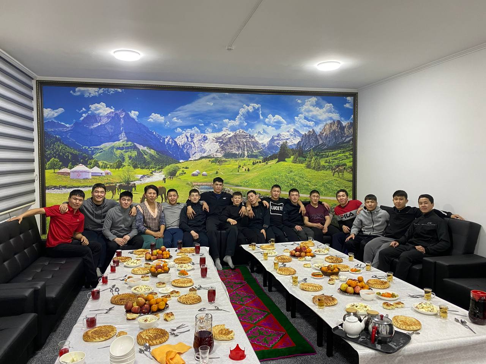
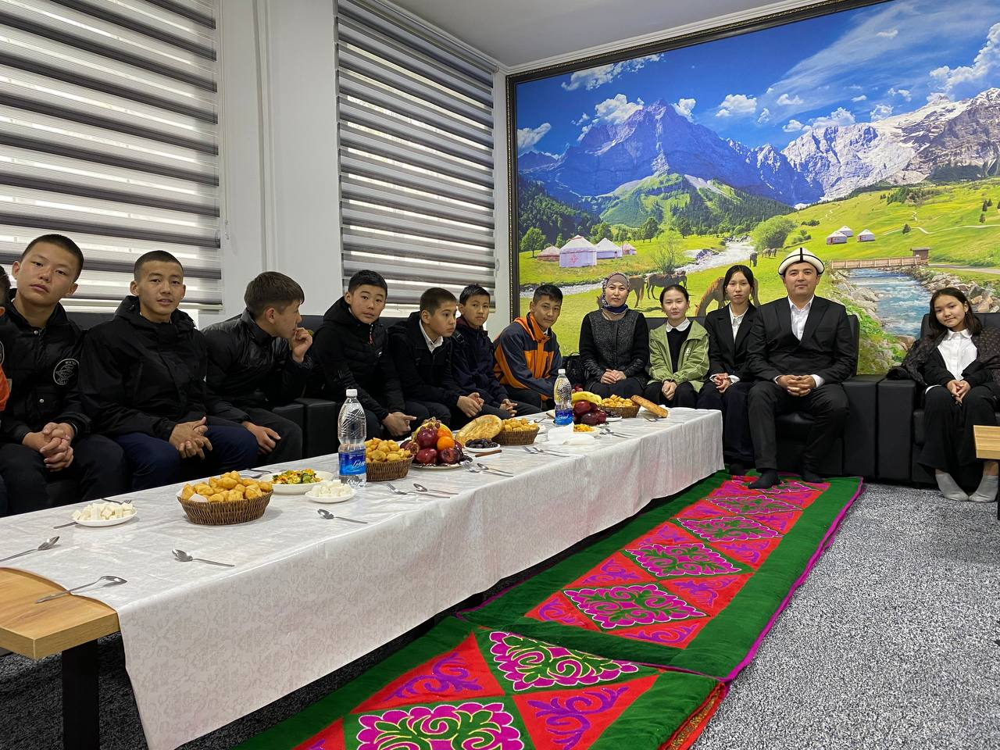

 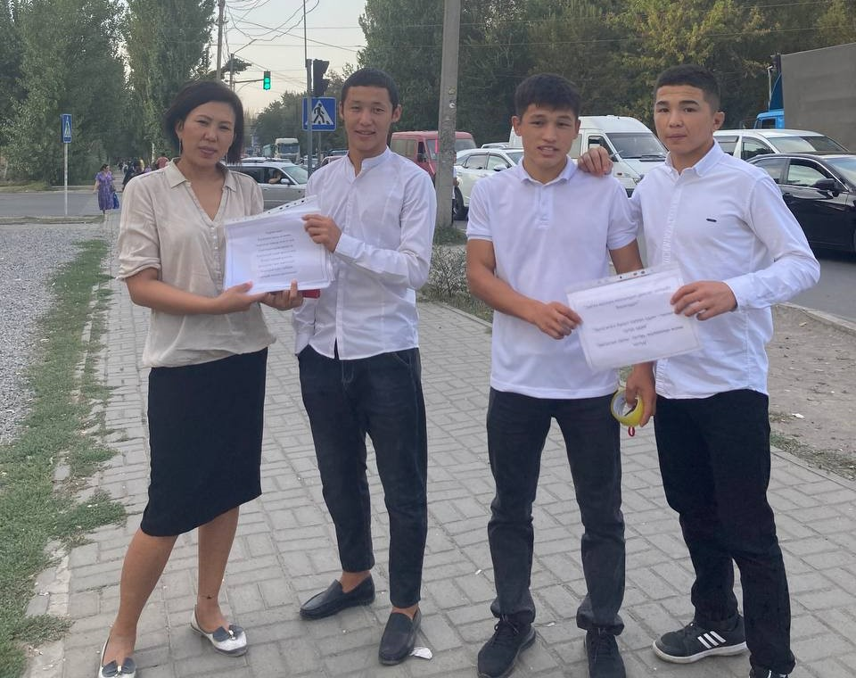
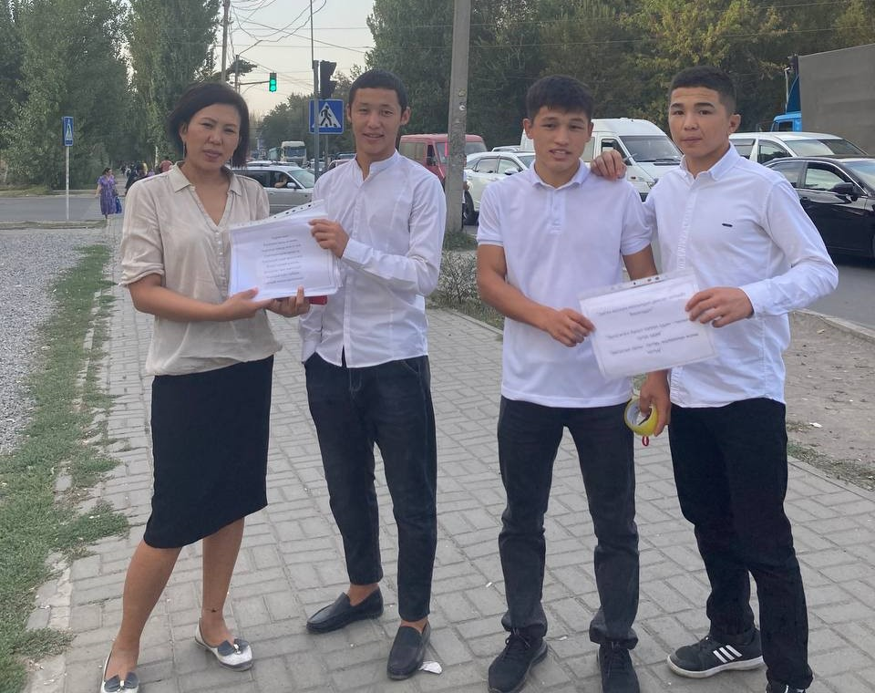
«Ырдайлы, достор!»
Запланированный КОНКУРС на ноябрь месяц 2022 года "Мистер РСК" был отменен в связи с отсутствием финансирования (рапорт приложен)
25 декабря 2023 года провели фестиваль хоровой песни «Ырдайлы, достор!», где ученики 8-11 классов исполнили песни известных кыргызских исполнителей такие как « Мурас», «Кыргызстан» и т.д. Фестиваль прошел в позитивной обстановке

 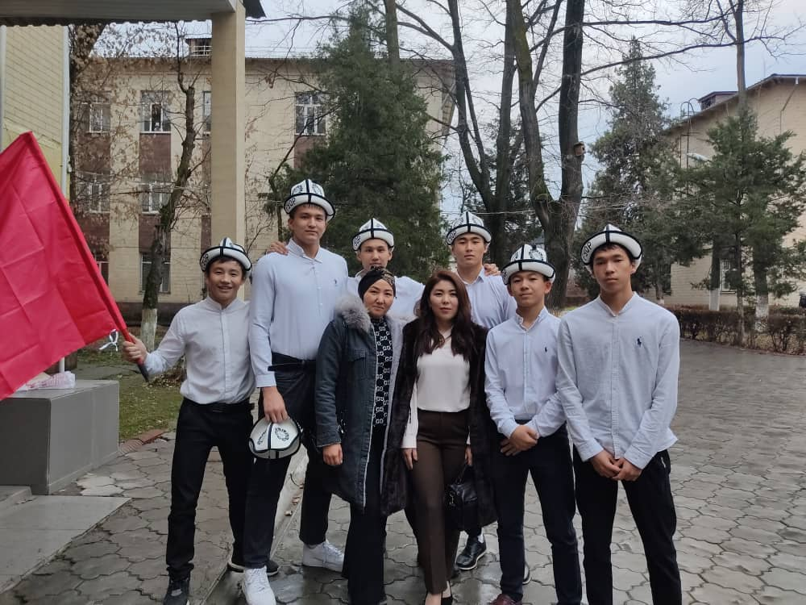
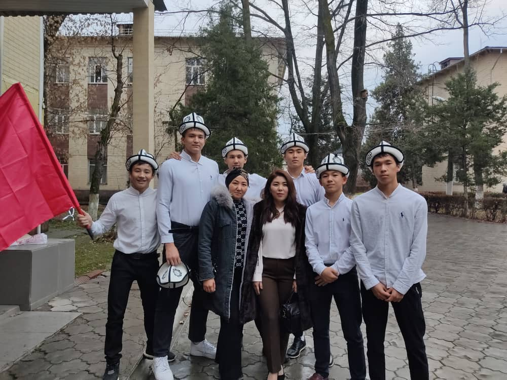

21 февраля - Международный день родного языка
Международный день родного языка (International Mother Language Day), провозглашенный Генеральной конференцией ЮНЕСКО 17 ноября 1999 года, отмечается с 2000 года ежегодно 21 февраля с целью содействия языковому и культурному разнообразию и многоязычию.

23 февраля — День защитника Отечества
С 2003 года День защитника Отечества в Кыргызстане, отмечаемый 23 февраля, — государственный праздник, объявленный официальным выходным днем.
Были приглашены воины Национальной Гвардии КР, а также воины пограничники специального назначения "Бору"
 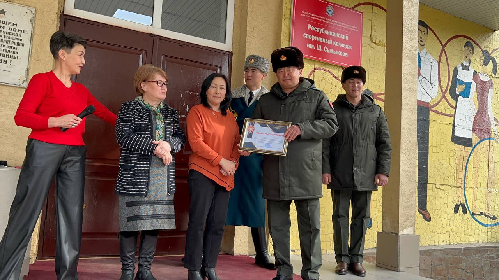
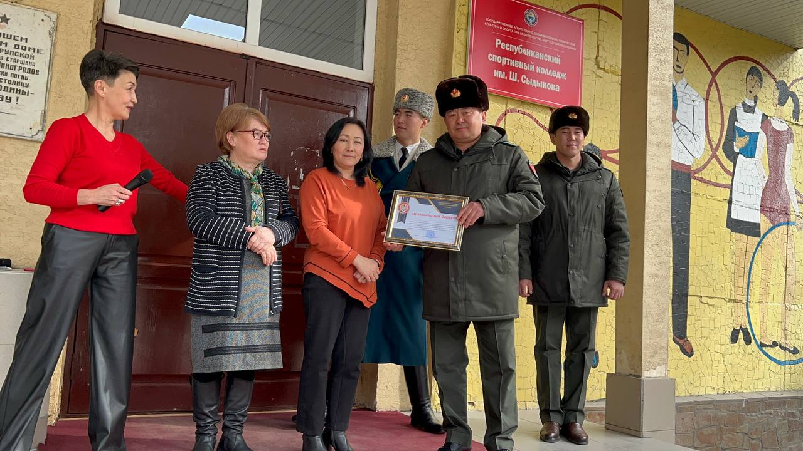


21 марта — праздник Нооруз!
21 марта, в день весеннего равноденствия, в Кыргызстане отмечается народный праздник Нооруз
Раньше месяц март кыргызы называли Нооруз (Нооруз элдик майрам күнү)
Если в этот день рождались мальчики, их называли, по традиции, Ноорузбаями или Ноорузбеками, а девочек просто Нооруз или Ноорузгуль

 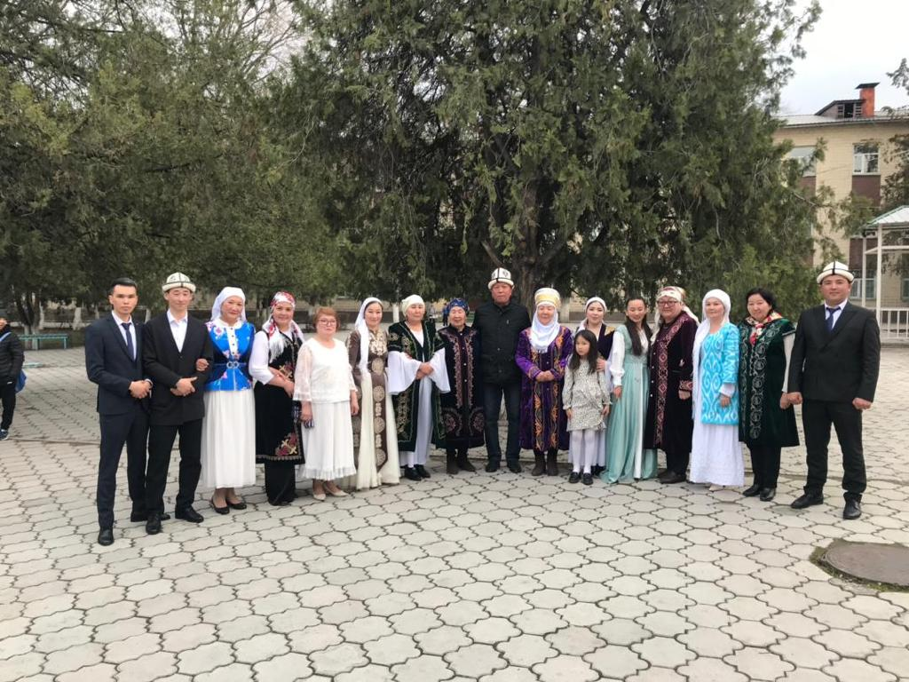
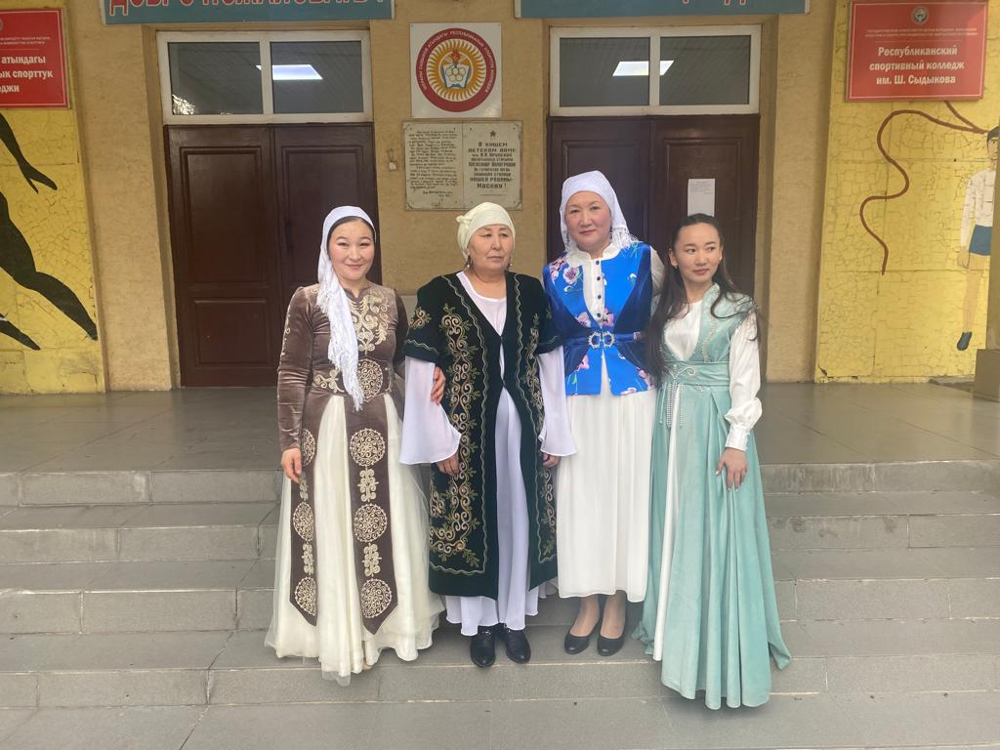
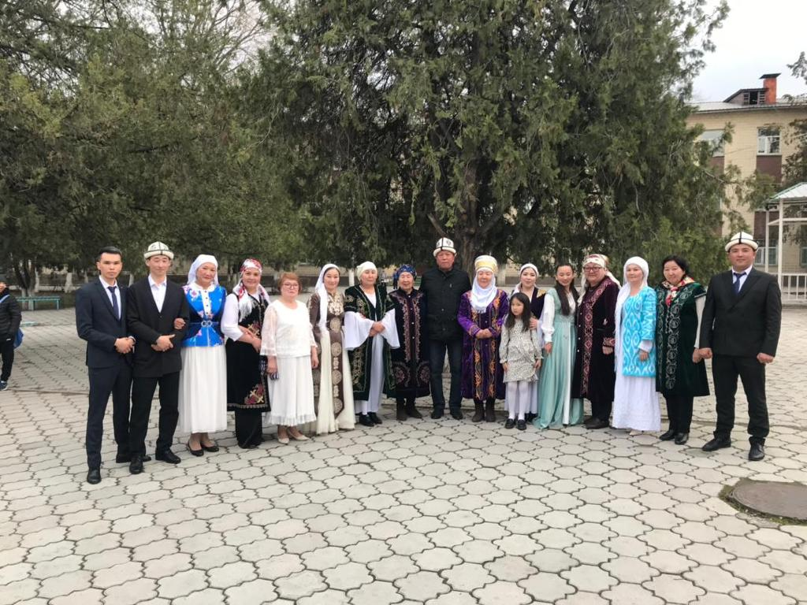
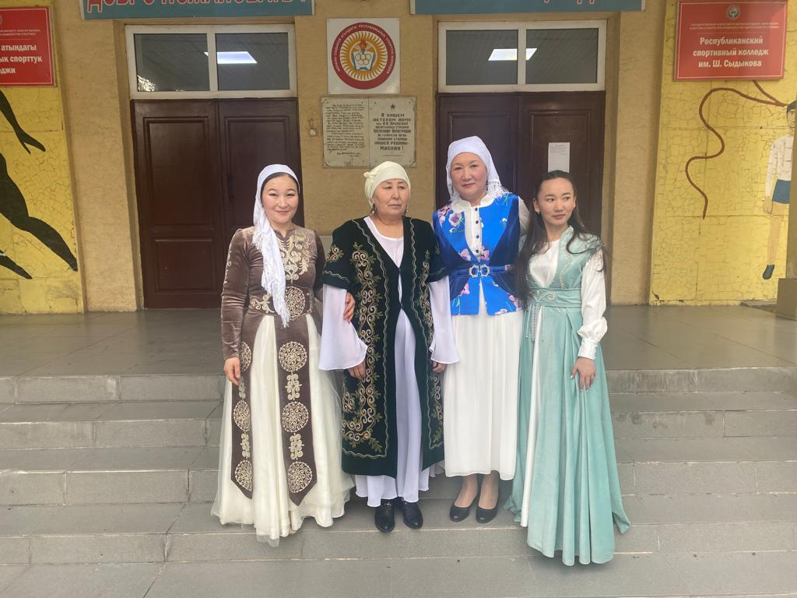
Настоящее есть проявление прошлого, как бы далеко оно от нас ни отстояло.
«Если вы отрицаете свою историю, вы стали безродными», - мы пригласили наших студентов посетить наш Исторический музей в столице, чтобы познакомить их с нашим прошлым.